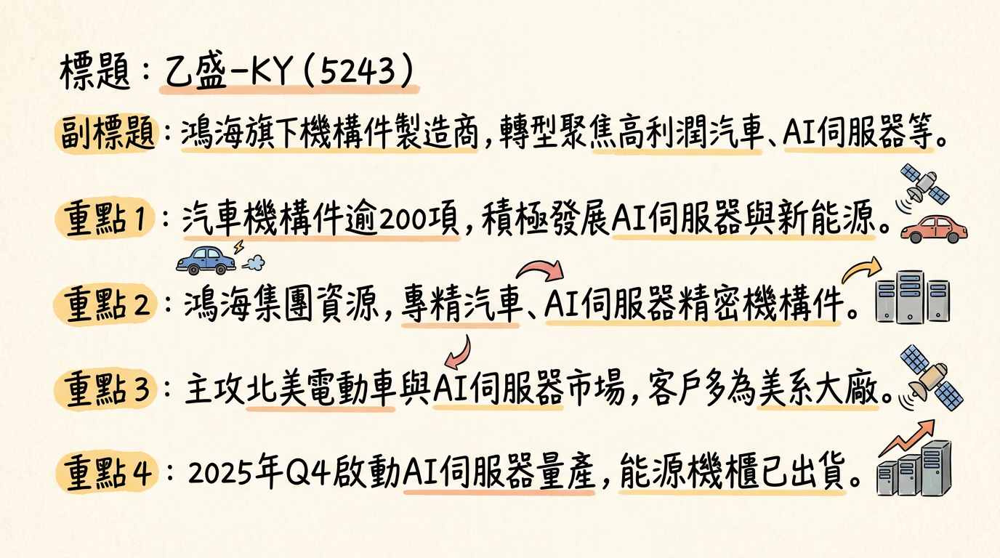
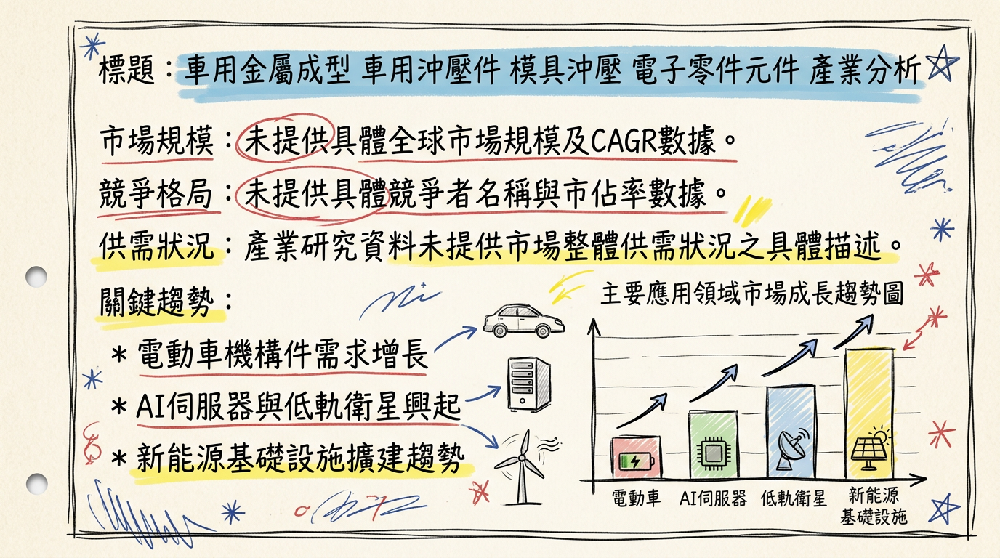
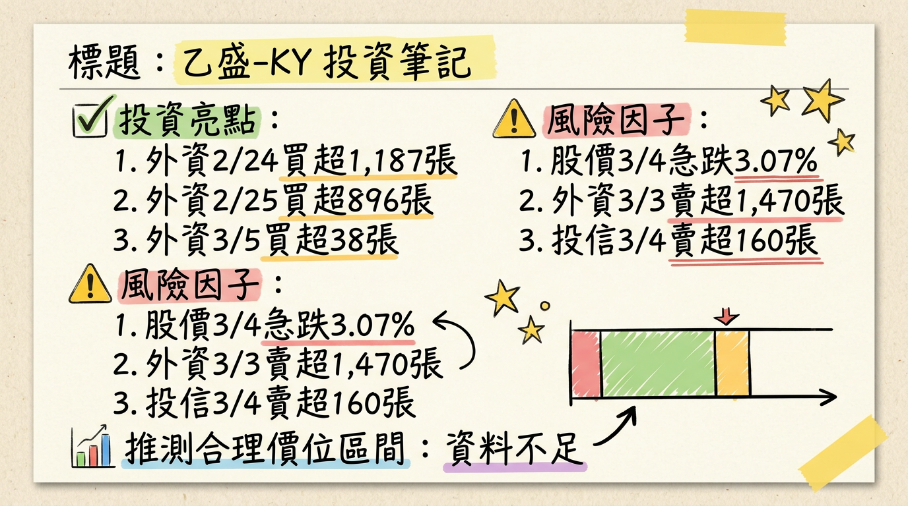

5243 乙盛-KY 深度研究報告
一句話摘要
乙盛-KY (5243) 憑藉鴻海集團優勢，正積極轉型，策略性削減低毛利消費性電子業務，聚焦高成長的汽車機構件、AI伺服器、低軌衛星及新能源基礎設施四大支柱。隨著AI伺服器與低軌衛星訂單於2025年第四季開始放量，預期2026年營收及獲利將迎來雙位數成長，獲利增幅更將超越營收，有望挑戰掛牌以來新高，展現顯著的產品組合優化效益與長期成長潛力。
公司概覽
乙盛-KY主要從事精密機構件製造，憑藉其模具沖壓、金屬成型及組裝能力，提供多元化產品。
核心產品與服務：
汽車機構件：主攻北美電動車市場，提供車身、電池系統、內外飾等逾200項零組件，並拓展至全地形車（ATV）與多功能越野車（UTV）。
網通機構件：涵蓋AI伺服器、通用型伺服器、儲存伺服器、資料中心周邊設備（電源櫃Power Shelf、交換器Switch、備援電池BBU）以及低軌衛星設備。AI伺服器已於2025年第四季量產。
新能源基礎設施：美系客戶訂單，包含能源機櫃等，已進入量產並出貨，應用於儲能、節能與能源櫃。
消費性電子機構件：策略性減少電視（TV）業務，轉向遊戲機、導航器、無人機、機器人等。
營收結構（依應用別）：
| 應用別 | 2025年第三季佔比 | 2025年全年預估佔比 |
|---|
| 汽車應用 | 59.06% | 約近六成 |
| 網通機構件與伺服器產品 | 18.15% | 逾兩成 |
| 消費性電子機構件 | 17.06% | 持續下滑 |
| 新能源應用 | 未公布 | 預計2026年成長 |
- 墨西哥廠：集團最大產能基地，主要負責車用機構件（電動車、ATV/UTV）與新能源相關訂單（能源機櫃）。受益於USMAC協議，具地利優勢，能降低運輸成本、縮短供貨時間、分散關稅風險。已於2025年初進入量產。
- 越南廠：供應東南亞市場，部分伺服器組件的備援基地。董事會於2025年11月通過二期擴建計畫，投資1,720萬美元。
- 馬來西亞廠：專注東南亞本地硬體機構需求。
- 中國（昆山、煙台）：服務中國本地客戶與全球供應鏈中的非敏感區域需求。
- （目前未找到各製造基地具體的2024-2026年營收貢獻比例數據）
所屬細分產業與題材：
車用金屬成型、模具沖壓、電子零件元件、AI伺服器、低軌衛星（LEO）、新能源（儲能、能源機櫃）、鴻海集團概念股。
核心競爭優勢
鴻海集團資源整合：作為鴻海旗下關鍵機構件廠，受益於集團龐大供應鏈、客戶網絡及資源共享。
全球化生產佈局：墨西哥、越南、馬來西亞及中國的多元化生產基地，有效規避地緣政治風險，尤其墨西哥廠在北美市場的戰略優勢顯著，能貼近客戶並降低關稅衝擊。
產品組合策略轉型：成功從低毛利消費性電子轉向高利潤的汽車機構件、AI伺服器、低軌衛星及新能源領域，顯著提升整體獲利能力。
精密模具與沖壓技術：具備高精度模具設計、金屬沖壓成型及複雜組裝能力，是其在高階車用與AI伺服器機構件市場的技術壁壘。
跨產業多元發展：同時切入電動車、AI、低軌衛星及新能源等高速成長領域，分散單一產業風險，並具備多重成長引擎。
財務分析
月營收趨勢
| 月份 | 金額 (新台幣億元) | 月增率 MoM | 年增率 YoY |
|---|
| 2026年1月 | 10.69 | 25.09% | -13.19% |
| 2025年12月 | 8.55 | -15.35% | -17.17% |
| 2025年11月 | 10.10 | 6.23% | -20.58% |
| 2025年10月 | 9.50 | -6.42% | -29.42% |
| 2025年9月 | 10.16 | 14.00% | -7.75% |
| 2025年8月 | 8.91 | 3.74% | -22.85% |
- 分析：2025年下半年月營收普遍呈現年減，反映公司策略性削減低毛利訂單及總體經濟逆風。然而，2026年1月營收月增25.09%至10.69億元，顯示營運動能有回溫跡象，預期2026年第一季營收有機會季、年雙增。
季度數據
2025年第三季主要財務指標：
- 季營收：新台幣 27.74 億元 (季減 9%，年減 3%)
- 毛利率：25.33% (較2025年第二季的21.41%和2024年同期的21.23%顯著提升，創掛牌新高)
- 營業利益率：10.13% (高於2025年第二季的7.95%，創掛牌新高)
- 稅後淨利率：7.35% (與2025年第二季的6.46%提升)
- EPS：新台幣 1.21 元 (較2025年第二季的1.16元季增，較去年同期季增26.04%)
- 分析：儘管2025年第三季營收季減，但因產品組合優化及費用控管得宜，毛利率、營業利益率和稅後淨利率均呈現顯著的「三率三升」趨勢，帶動EPS穩健成長，凸顯公司轉型策略奏效。
年度趨勢
* 全年營收：新台幣 130.94 億元
* EPS：新台幣 3.36 元
* 全年營收：預估約 新台幣 120.01 億元 (年減 8.35%)
* EPS：法人平均預估在 新台幣 4.5 至 5.13 元之間，另有法人看好有望逾 新台幣 4 元，甚至預估可達 新台幣 4.61 元。
- 分析：2025年營收雖預估年減，主要由於策略性縮減低毛利業務，但EPS因產品組合改善及獲利能力提升，有望較2024年顯著成長，創近三年高點。這符合公司「獲利成長空間將大於營收」的目標。
法說會重點 (2025年11月20日)
- 整體展望：預計2026年營運重啟成長，營收看雙位數增長，獲利增幅將大於營收，有望挑戰掛牌以來新高。
- AI 伺服器：
* 已透過ODM廠取得訂單，2025年第四季開始小量出貨並投入量產。
* 預計2026年第一季將顯現月增動能。
* 正與客戶共同研發電源櫃（Power Shelf）、交換器（Switch）及備援電池（BBU）等伺服器相關產品。
* 2026年下半年將有CSP客戶新訂單加入，營收規模將顯著擴大，成為2026年營運兩大引擎之一。
* 正接觸美系及歐系新客戶，產品從地面接收設備延伸至航空器、衛星設備等高毛利機構件需求，持續攀升。
* 將成為2026年營運兩大引擎之一。
* 2025年低軌衛星營收占比約5%至10%，預估2026年訂單仍可維持雙位數成長。
* 來自美系客戶訂單進入量產階段，能源機櫃產線已開始出貨。
* 能源機櫃類似伺服器機櫃設計，含多項節能裝置，商機來自能源產業與製造回流美國。
* 預計2026年新能源營收占比有機會達5%至10%。
* 2025年法說會預估持平，但新車款訂單進入量產，並取得北美新客戶ATV/UTV訂單。
* 佔比穩定維持在55%至60%。
* 營收預計下滑，但取得遊戲機訂單，並爭取電視機構件之外的消費電子產品訂單（導航器、無人機、機器人等）。
* 墨西哥、越南、馬來西亞等地設有生產基地，墨西哥廠為集團最大產能基地。
* 越南二期廠房擴建計畫已於2025年11月通過，預計投資1,720萬美元（約新台幣5.3億元），以因應全球生產製造業遷移及客戶需求。
* （未找到2025-2026年具體的產能利用率和整體資本支出金額的最新資料）
* 2026年第一季：隨著AI伺服器及周邊儲存伺服器等出貨增溫，營收有機會季、年雙增，營運預期將自第一季開始向「錢」衝，且獲利增幅將大於營收。
* 2026年全年：營收、獲利同步回到成長軌道，營收有望優於2025年並挑戰歷史新高，獲利增長幅度可優於營收，有望挑戰掛牌以來新高。
券商觀點
券商目標價與評等：
| 券商名稱 | 目標價 (新台幣) | 評等 | 日期 |
|---|
| 福邦投顧 | 101 | 看多 | 2025年11月21日 (⚠️過時，已超過 6 個月) |
* 福邦投顧預估約 新台幣 4.61 元 (2025年11月21日) (⚠️過時，已超過 6 個月)
* 法人平均預估落在 新台幣 4.5 至 5.13 元之間，另有預估逾 新台幣 4 元。
* 法人預期獲利增長幅度可優於營收，有望挑戰掛牌以來新高。具體數字未有最新公開券商預估。
- 評等異動：福邦投顧於2025年11月21日給予「看多」評等 (⚠️過時，已超過 6 個月)。未找到2025-2026年其他重大調升/調降評等資料。
財報深度分析
利潤率趨勢
| 季度 | 毛利率 | 營業利益率 | 稅後淨利率 |
|---|
| 225Q3 | 25.33% | 10.13% | 7.35% |
| 225Q2 | 21.41% | 7.95% | 6.46% |
| 225Q1 | 18.27% | 7.04% | 4.96% |
| 224Q4 | 18.87% | 4.56% | 4.56% |
| 224Q3 | 21.23% | 8.41% | 4.78% |
| 224Q2 | 18.32% | 4.17% | 4.30% |
| 224Q1 | 18.54% | 6.35% | 3.52% |
- 分析：乙盛-KY的利潤率在2025年呈現顯著改善趨勢，毛利率從2025年第一季的18.27%大幅提升至第三季的25.33%，營業利益率與稅後淨利率亦同步攀升，創下掛牌以來新高。主要歸因於：
*
產品組合優化：高毛利的汽車機構件與網通/伺服器產品（合計佔營收超過80%）比重提升，捨棄低毛利、無獲利貢獻的消費性產品，使得整體利潤結構優化。車用與AI伺服器零件因其高精度、複雜結構及嚴苛工藝要求，具備更高的附加價值與定價權。
* 費用控管：2025年上半年營業費用有效收斂，有助於營業利益率的改善。
* 新廠量產效益：墨西哥新廠量產效益逐步顯現，提升生產效率。
存貨分析與營運效率
| 季度 | 存貨金額 (新台幣億元) | 存貨週轉天數 | 應收帳款週轉天數 |
|---|
| 225Q3 | 9.97 | 42.24 | 61.82 |
| 225Q2 | 9.47 | 40.87 | 66.35 |
| 225Q1 | 未直接提供 | 43.84 | 65.43 |
| 224Q4 | 未直接提供 | 47.60 | 55.36 |
*
存貨週轉天數：從2024年第四季的47.60天下降至2025年第二季的40.87天後小幅上升至第三季的42.24天，整體維持在相對較低水平，顯示公司在產品組合調整期間，存貨管理效率良好，未出現異常堆積。
* 應收帳款週轉天數：2025年前三季在61-66天之間波動，較2024年第四季的55.36天略有提升，但仍屬合理範圍。考量主要客戶信用卓著，呆帳風險極低。
資本支出與產能
* 充足的現金流支持在墨西哥與越南的資本支出需求。
* 2025年11月，董事會通過越南子公司二期廠房擴建計畫，預計投資1,720萬美元（約新台幣5.3億元），以因應全球生產製造業遷移及滿足客戶需求。
- 產能佈局：強化墨西哥廠在地化生產，為集團最大產能基地且自製率高，有利服務北美客戶。全球佈局（墨西哥、越南、馬來西亞、中國）能靈活應對供應鏈轉移，展現「China + N」彈性。
- 折舊攤銷趨勢：2025年第三季折舊費用為1.546億元，攤銷費用388.4萬元。未直接提供2024年各季折舊數據，但長期來看，資本支出增加將導致折舊攤銷費用上升。
其他財報重點
* 2025年第三季：37.84% (較前一季下降)
* 2025年第二季：40.65%
* 2025年第一季：40.62%
* 2024年第四季：40.97%
* 分析：負債比率呈現下降趨勢，特別是2025年第三季明顯降低，顯示財務結構持續優化。公司在2025年積極償還長期借款，從2024年底的3.47億元大幅降至接近清償。
* 2025年第三季：7.197億元
* 2025年第二季：1.324億元
* 2025年第一季：6.328億元
* 2024年第四季：5.230億元
* 分析：2025年第三季自由現金流量表現亮眼，達7.197億元，較前兩季有顯著提升，累積前九個月每股自由現金流年成長率達1147.7%，顯示公司強勁的現金產生能力和健康營運。
- 業外收支重大項目：未找到2024-2026年具體數據，但公司強調產品組合優化帶來本業獲利改善。
股權異動
- 董監事/大股東申報轉讓紀錄：最近一年無申報持股轉讓紀錄。
- 庫藏股買回紀錄：未找到2024-2026年庫藏股買回紀錄。最近一次為2018年11月買回5,000千股。
- 可轉換公司債（CB）：未找到2024-2026年發行可轉債的最新資料。
- 增減資計畫：未找到2024-2026年現金增資或減資計畫的最新資料。
- 股利政策：
*
2025年：預計發放現金股利1.50元。
* 2024年：發放現金股利1.60元。
* 歷史趨勢：近年主要發放現金股利，未發放股票股利。
產業分析
市場規模與複合年均成長率（CAGR）
| 產業類別 | 市場規模 | CAGR (時間區間) | 備註 |
|---|
| 全球電動車市場 | 2024年7139.3億美元，2025年8926.3億美元 | 13.2% (2025-2032) | 2032年達2兆1318.9億美元 |
| 全球電動車零件市場 | 2029年達4237.2億美元 | 15.4% (2025-2029) | |
| 全球汽車電子市場 | 2023年近3000億美元 | 7% (2023-2030) | 預估2030年突破5000億美元 |
| 全球ATV和UTV市場 | 2025年118.3億美元，2026年127.5億美元 | 8.42% (2025-2026) | 另預計2037年達130億美元 (CAGR 8% 2025-2037) |
| 全球AI伺服器市場 | 2025年1946.2億美元 | 34.73% (2026-2034) | 2034年達2兆8473.2億美元。另估2025年3000億美元 (年增46.1%) |
| 超低軌道（VLEO）衛星市場 | 2031年達17.9億美元 | 76.2% (2025-2031) | |
| 低軌道（LEO）衛星市場 | 2024年142億美元 | 13.2% (2024-2034) | 2034年達488億美元 |
| 全球儲能市場 | 2025年2950億美元 | 9.53% (2025-2030) | 2030年達4650億美元 |
| 美國儲能市場 | 2025年新增容量57.6GWh | N/A | 較2024年成長30%，創歷史新高 |
- 分析：乙盛-KY所處的電動車、AI伺服器、低軌衛星及新能源基礎設施等核心產業均展現強勁的市場成長動能，特別是AI伺服器與超低軌道衛星市場的CAGR高達34.73%和76.2%，為公司提供了巨大的成長腹地。
競爭格局
由於缺乏公開且詳細的2024-2026年最新數據，很難對乙盛-KY與其主要競爭對手進行全面的技術、產能、客戶和價格的具體比較。
| 項目 | 乙盛-KY的優勢 | 產業普遍情況 (非直接比較) |
|---|
| 鴻海集團 | 資源整合、客戶網絡、供應鏈優勢 | 台灣同業如勤誠、晟銘電在伺服器機構件領域亦有競爭力 |
| 產品組合 | 轉向高利潤車用、AI伺服器、低軌衛星、新能源 | 市場競爭激烈，供應商需不斷創新 |
| 北美佈局 | 墨西哥廠地利優勢，深耕美系電動車與新能源客戶 | 電動車市場庫存調整，中國供應商價格競爭力強 |
| AI伺服器 | 2025Q4量產，積極開發電源櫃、交換器、BBU等 | NVIDIA主導GPU市場 (逾90%)，電源供應器台達電、光寶科佔大宗 |
| 低軌衛星 | 接觸美系/歐系新客戶，產品線延伸至航空器/衛星設備 | 超低軌道衛星市場CAGR極高，新興市場機會大 |
| 儲能系統 | 美系客戶訂單，能源機櫃出貨 | 中國供應商成本領先，北美/歐洲整合商強調軟體、安全合規 |
| 技術 | 精密模具、金屬沖壓成型、結構模組組裝 | AI伺服器需高瓦數、高效率電源及水冷散熱技術 |
- 台灣同業比較：目前未找到乙盛-KY及其台灣同業（如勤誠、晟銘電等）的最新營收規模、毛利率、EPS的直接對比數據。
產業趨勢
AI伺服器的高功耗與散熱技術革新：
* 趨勢：NVIDIA Blackwell等新一代AI晶片功耗大幅提升（如GB200整體功耗高達2,700瓦），傳統氣冷散熱已不足，水冷散熱模組滲透率快速提高。資料中心對高密度供電與高效冷卻需求激增。
* 影響：推動AI伺服器電源供應器向高瓦數、高轉換效率發展。水冷散熱解決方案成為高階AI伺服器架構關鍵，為機構件、散熱模組及電源供應商帶來新商機。
電動車的智能化與輕量化趨勢：
* 趨勢：輔助駕駛、智慧座艙、車聯網與軟體定義汽車推動汽車電子系統需求持續成長。輕量化材料和設計最佳化成為電動車零件市場重要趨勢。
* 影響：汽車電子市場規模擴大，對零組件供應商的技術能力要求更高，需具備系統整合能力。乙盛-KY的精密金屬成型技術在輕量化材料應用上具優勢。
儲能系統的多元化與在地化發展：
* 趨勢：再生能源滲透率提升，對儲能容量需求激增以確保電網穩定。供應鏈在地化、非鋰電池技術（如鈉離子電池）湧現，以及美國AI與資料中心對電力需求的增加。
* 影響：儲能系統趨向系統一體化、大組串整合、構網型儲能，單體電池芯容量增加。供應鏈在地化為相關零組件和機櫃供應商帶來新市場機會。
對乙盛-KY的具體機會與威脅
*
AI伺服器爆發性成長：已投入量產AI伺服器機構件，直接受惠於高功耗與散熱需求帶來的商機。
* 電動車市場回溫與技術升級：北美市場佈局及提供多項零組件，有望受惠於訂單回溫及智能化、輕量化趨勢。
* 新能源基礎設施需求擴大：美系客戶能源機櫃訂單量產，抓住全球再生能源與資料中心儲能需求。
* 低軌衛星市場高成長：超低軌道衛星市場的極高CAGR為其設備業務帶來顯著潛力。
*
市場競爭加劇：各主要業務領域均面臨激烈競爭，需持續創新。
* 供應鏈不確定性：全球供應鏈重組、關稅政策及地緣政治緊張可能影響成本與穩定性。
* 技術快速迭代：AI、電動車、儲能等領域技術發展迅速，需持續投入研發。
* 客戶集中風險：對少數美系大客戶依賴度高，可能面臨訂單波動風險。
相關投資題材
- AI (人工智慧)：作為AI伺服器機構件供應商，直接受惠於AI算力需求的爆發。隨著GB200等新晶片功耗提升，對電源櫃、水冷散熱模組等資料中心基礎設施需求增加，乙盛-KY的相關產品將從中受益。
- 電動車：主力於北美電動車市場，提供車身、電池系統、內外飾零組件，連結電動車產業成長。拓展ATV/UTV市場也受惠於電動化趨勢。
- 低軌衛星：提供低軌衛星設備，與次世代宇宙基礎設施發展緊密相關，受惠於LEO衛星低延遲、低成本特性帶來的爆發性成長。
- 新能源基礎設施：能源機櫃產品應用於儲能、節能，直接連結全球再生能源發展和電網穩定需求，以及資料中心對可靠電力的需求。
近期催化劑
利多事件清單：
- 2026年02月25日：乙盛-KY預計2026年第二、三季迎來伺服器出貨高峰 (通用型、AI、儲存伺服器)，低軌衛星因美系客戶訂單放量有不錯成長空間，新能源業務亦有望開花結果。
- 2026年02月03日：法人預期2026年在伺服器與低軌衛星需求推升下，營收與獲利可望回升，且產品組合改善使獲利增幅將超過營收成長率。低軌衛星訂單預估維持雙位數成長，並接觸其他美系與歐系潛在客戶。
- 2026年01月27日：法人看好2025年EPS有望逾4元，創近三年高點；2026年在AI伺服器及低軌衛星等業務成長帶動下，獲利有望持續攀高。公司預估2026年營收有望優於2025年，AI伺服器及低軌衛星為兩大營運引擎。
- 2026年01月26日：盤中強勢急漲8%，主力回補、AI伺服器題材加持，法人評等看多。
- 2026年01月08日：預估2026年第一季營收有機會季、年雙增，全年營收、獲利都有較2025年增長的空間。AI伺服器貢獻持續放大，儲存伺服器預計第一季小量出貨，新一代Vera Rubin系列預計3月開始打樣。
- 2025年12月22日：受惠於AI伺服器機構件、低軌衛星與能源機櫃產線出貨放量，營運可望自2026年第一季開始增長，營收有望重返年增，挑戰歷年新高。
- 2025年11月21日：法說會展望2026年，除消費性電子外其餘應用均看成長，網通（AI伺服器、低軌衛星）將是成長性最強應用，營收可望雙位數增長。法人推估2026年獲利增長幅度可優於營收，挑戰掛牌以來新高。
- 2025年11月20日：2025年第三季獲利能力顯著改善，毛利率、營業利益率和淨利率均呈現「三率三升」趨勢。
- 2025年11月12日：董事會決議通過越南子公司二期廠房擴建計畫，預計投資1,720萬美元。2025年第三季毛利率提升至25.3%，創掛牌新高。
利空事件清單：
- 2026年03月04日：盤中股價急跌3.07%，三大法人外資、投信、自營商合計賣超。
- 2026年03月03日：外資賣超1,470張。
- 2026年02月12日：2026年1月營收年減13.19%。
- 2026年01月29日：在特斯拉轉型衝擊概念股的背景下，乙盛-KY表示已將各種可能納入預算評估，預期2026年車用訂單可望持穩 (而非顯著成長)。
- 2026年01月09日：2025年12月營收月減15.35%，年減17.17%，主因年底美國客戶長假影響。
- 2025年12月12日：墨西哥國會通過，2026年起將對未與墨國簽署貿易協定的亞洲國家課徵5%至50%不等關稅 (對公司影響有限，因墨西哥廠自製率高)。
⭐ 成長動能時間軸
| 動能類型 | 具體內容 | 時間點/時程 |
|---|
| 擴廠 | 越南二期廠房擴建：投資1,720萬美元（約新台幣5.3億元），因應供應鏈遷移及客戶需求。 | 2025年11月12日董事會決議通過 |
| 墨西哥廠強化在地化生產：集團最大產能基地，高自製率，服務北美客戶。 | 2025年初進入量產，持續強化 |
| 新客戶 | AI伺服器：取得美系雲端服務供應商（CSP）訂單。 | 2025年第四季正式投入量產 |
| 低軌衛星：接觸美系及歐系新客戶。 | 2026年 |
| 新能源：美系客戶訂單進入量產階段。 | 2026年 |
| 汽車應用：取得北美新客戶ATV/UTV訂單。 | 2025年進入量產 |
| 人形機器人：傳聞已開始接洽相關業務。 | 近期市場傳聞 |
| 新市場 | 低軌衛星：產品線從地面接收站延伸至航空器與衛星設備等場景。 | 2025年開始延伸，2026年持續拓展 |
| 新能源基礎設施：能源機櫃商機來自能源產業與製造回流美國。 | 預計2026年進入量產並出貨 |
| 產能 | AI伺服器產能放量：已投入量產AI伺服器機構件。 | 2025年第四季正式投入，2026年第一季顯現月增動能 |
| 儲存伺服器：開始小量出貨。 | 2026年第一季 |
| 新一代Vera Rubin系列：開始打樣，爭取切入供應鏈。 | 2026年3月 |
| 全球化佈局：墨西哥、越南、馬來西亞、中國廠區協作，應對「China + N」。 | 持續運作與調整 |
| 需求 | AI算力需求爆發：帶動AI伺服器相關機構件需求。 | 2025年第四季開始，預計2026年持續爆發性成長 |
| 低軌衛星通訊爆發式成長：帶動相關機構件需求。 | 2025年開始，預計2026年持續成長 |
| 新能源基礎設施需求：因再生能源發展、製造回流美國及AI數據中心電力需求。 | 預計2026年進入量產並出貨 |
| 北美電動車市場穩健增長：深耕電動車領頭羊及開發非乘用車市場。 | 2025年前三季汽車機構件業務佔營收約六成，2026年預估持平 |
2026 展望
主要成長動能：
AI伺服器與網通業務：預計為2026年最主要的成長引擎，營收成長幅度將大於整體營收增幅。隨著美系CSP客戶新訂單及電源櫃、交換器、備援電池等周邊產品的共同開發與量產，AI伺服器將在2026年下半年顯著貢獻營收。新一代Vera Rubin系列3月開始打樣，有望切入供應鏈。
低軌衛星業務：作為另一大成長引擎，美系客戶訂單持續放量，產品線延伸至航空器與衛星設備，並積極接觸歐系新客戶，預計維持雙位數成長。
新能源基礎設施：美系客戶訂單進入量產，能源機櫃出貨，預計2026年營收占比有機會達5%至10%，受惠於美國儲能與節能市場成長。
汽車應用：儘管全球電動車市場雜音，但預期2026年車用訂單可望持平，新車款及北美新客戶ATV/UTV訂單將支撐營收。
獲利優於營收成長：在產品組合持續優化及高毛利業務比重提升下，管理層與法人一致預期2026年獲利增幅將顯著大於營收成長。
- 量化目標：2026年整體營收有望重啟雙位數成長，並挑戰歷史新高；獲利有望挑戰掛牌以來新高。
風險因子：
- 消費性電子產品下滑：低毛利消費性電子產品營收持續下滑，短期內仍是營收拖累因素。
- 電動車市場需求不確定性：全球電動車需求放緩可能影響車用機構件業務的增長空間。
- 客戶集中風險：儘管主要客戶信用卓著，但對少數美系大客戶的依賴可能帶來訂單波動風險。
- 匯率波動風險：主要功能性貨幣為美元，人民幣升值將對獲利產生負面影響，雖有避險策略但仍需注意。
- 地緣政治與關稅：中美貿易衝突及地緣政治不確定性可能影響供應鏈穩定性及成本。墨西哥政府新關稅法規雖影響有限，但仍需持續觀察。
- 技術迭代加速：AI、電動車等領域技術快速發展，公司需持續投入研發以維持競爭力。
投資結論
綜合乙盛-KY的策略轉型、市場佈局與財務表現，我們給予其正面評價，並建議投資人可關注其長期成長潛力：
AI與低軌衛星雙引擎點火，獲利結構顯著優化：乙盛-KY成功切入AI伺服器及低軌衛星高成長領域，並於2025年第四季實現量產，這些高毛利業務將成為2026年營收及獲利成長的兩大主要驅動力。隨著產品組合持續優化，預期2026年獲利增幅將優於營收成長，整體利潤率將保持在歷史高位。
全球化佈局分散風險，墨西哥廠具地緣戰略優勢：公司透過墨西哥、越南等生產基地，有效規避地緣政治風險及關稅壁壘，特別是墨西哥廠在北美市場的近地供應優勢，將使其在電動車及新能源等業務上更具競爭力。越南廠擴建亦支持未來伺服器業務需求。
穩健的財務體質，充沛現金流支持成長：2025年第三季負債比率下降至37.84%，自由現金流量強勁達7.197億元，顯示公司財務結構健康，具備足夠的資金支持未來的資本支出與業務擴張。
高成長產業趨勢加持，潛在新應用帶來想像空間：電動車、AI、低軌衛星及新能源等產業均具備高CAGR，為乙盛-KY提供堅實的成長基礎。此外，市場傳聞其已開始接洽人形機器人業務，若能成功切入，將為公司帶來新的長期成長想像空間。
目標價區間建議：
考量2025年法人預估EPS介於4.5至5.13元，以及2026年獲利有望挑戰掛牌以來新高的強勁成長動能，給予其較高的P/E估值。若假設2026年EPS能達到5.5至6.5元，並考量其在AI、低軌衛星等高成長產業的佈局，給予15至18倍P/E，預期其合理股價區間為 新台幣 90元 至 117元。
本報告由 AI 自動產生，資料來源為公開網路資訊，僅供參考，不構成投資建議。產生時間：2026-03-06 14:23
📊 資訊卡


